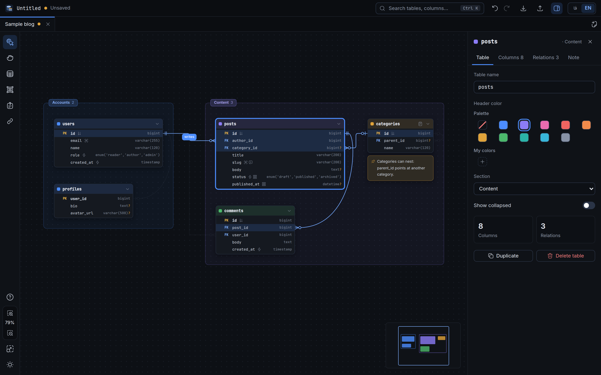

Database diagrams that live in one file
A local desktop editor for ER diagrams. Your whole project is a single .erd.json file you can commit, diff and hand to an AI agent. No account, no cloud.
Linux · Windows · macOS · free and open source

Why another ERD tool?
Most diagram tools keep your schema in their cloud or in a format only they read. This one keeps it in a file you own.
One file, one source of truth
The .erd.json file is the project. SQL, DBML, images and Markdown are generated from it, never edited by hand. Keys are written in a fixed order and defaults are left out, so Git diffs stay small.
Local and private
Nothing is uploaded. Open with from your file manager, drop a file on the window, or use the dialog. Saves are atomic: a crash never leaves half a file.
Made for AI agents too
A documented format, a JSON Schema and a ready-made skill let an agent read and write your diagram as plain JSON. There is also an export that is a briefing written for an agent.
Lines attach to columns
Relationships connect a column to a column with Crow's Foot ends, not a box to a box. Both cardinalities, ON DELETE and ON UPDATE live on the line.
Sections that move things
Group tables into a frame by area. Moving the section moves everything inside; dragging a table out removes it from the group. Membership is worked out from the layout, never stored.
English and Persian
The whole interface is available in English and Persian, with right-to-left layout. Table data always keeps Latin digits.
Features
Everything below is in the app today.
Tables, columns, types
Add a table by double-clicking the canvas. Tab moves to the next column. A type picker fills length, precision, scale and enum values, and hides types your database does not have.
Indexes and keys
Select columns and press Ctrl+I for a composite index with a chosen column order. PK, unique, not null, auto-increment and defaults are per column.
Inspector and notes
A side panel edits whatever is selected. Tables, columns and sections carry notes, and sticky notes can sit anywhere. Notes travel into the exports.
Search, tabs, undo
Ctrl+K finds tables, columns and notes. Several boards open in tabs. Undo and redo keep 500 steps, including moves and resizes.
Export SQL and DBML
CREATE TABLE, indexes and foreign keys for MySQL, PostgreSQL, SQLite, SQL Server or plain ANSI, and DBML for dbdiagram.io. Anything a database cannot express is reported, not dropped silently.
Images and selections
PNG or SVG of the whole board or only of what you selected, in dark or light.
Import SQL
Paste or open a schema dump (CREATE TABLE, indexes, foreign keys, comments, enums) and it becomes a new board.
Agent briefing
A Markdown export with a short how-to-read guide, every table with its notes, relationships and open points.
Get started in a minute
No sign-up and nothing to configure.
- Install itDownload the installer for your system below, or use the AppImage on Linux.
- Try the samplePress Ctrl+N and pick Sample board for a small blog database with sections, keys, relations and notes.
- Draw your ownDouble-click the canvas for a table. Drag from a column's dot to another table for a relationship. Press ? for help.
- Save and exportCtrl+S writes the
.erd.json. Ctrl+E exports SQL, DBML, images or Markdown.
Keyboard
Built for people and AI agents
Because the project is plain JSON with a schema, an agent can read your database design, change it and hand it back, and you open the result in the editor.
1. The file format
Every field is described in docs/FORMAT.md, with a machine-readable JSON Schema. Ids are stable, so renaming never breaks a reference.
2. The agent skill
A single Markdown file that teaches any coding agent the format, the rules for editing it safely, and how to check its work. Read the skill, or give your agent this link:
https://raw.githubusercontent.com/mnr73/erd-editor/main/skills/erd-editor/SKILL.md
3. Developing the app
Contributors who use an agent get AGENTS.md: the conventions and the traps the code does not tell you.
{
"format": "erd-editor",
"version": 1,
"meta": { "name": "shop", "dbType": "postgres" },
"tables": [
{
"id": "t_orders", "name": "orders",
"columns": [
{ "id": "c_orders_id", "name": "id",
"type": "bigint", "pk": true },
{ "id": "c_orders_user", "name": "user_id",
"type": "bigint", "notNull": true }
]
}
],
"refs": [
{
"id": "r_orders_user", "label": "places",
"from": { "table": "t_orders",
"columns": ["c_orders_user"],
"cardinality": "0..*" },
"to": { "table": "t_users",
"columns": ["c_users_id"],
"cardinality": "1" },
"onDelete": "cascade"
}
]
}
Shortened excerpt. The complete file is example.erd.json.
How it compares
Different tools suit different jobs. This is where this one fits.
| ERD Editor | dbdiagram.io | drawDB | MySQL Workbench | draw.io | |
|---|---|---|---|---|---|
| Works offline, no account | Yes | Online service | Runs in the browser | Yes | Yes (desktop app) |
| Whole project is one plain-text file you own | JSON, with a schema | Saved in the service | Saved in the browser | Own project format | Diagram file (XML) |
| Models columns, keys and relationships (not just shapes) | Yes | Yes | Yes | Yes | No, general shapes |
| Documented JSON Schema and an agent skill | Yes | No | No | No | No |
| Connects to a live database to reverse-engineer it | No (imports a SQL dump) | No | No | Yes | No |
The other columns are our understanding of those tools and may be out of date, so check their sites before deciding. If a cell is wrong, open an issue and we will fix it. ERD Editor does not connect to a running database: it works from a SQL dump you import.
Download
Latest release, built by GitHub Actions for each system.
The builds are not code-signed yet. Windows SmartScreen may say "unknown publisher": choose More info, then Run anyway. On macOS, right-click the app and choose Open the first time.
Or build it yourself: git clone https://github.com/mnr73/erd-editor && cd erd-editor && npm install && npm run tauri build